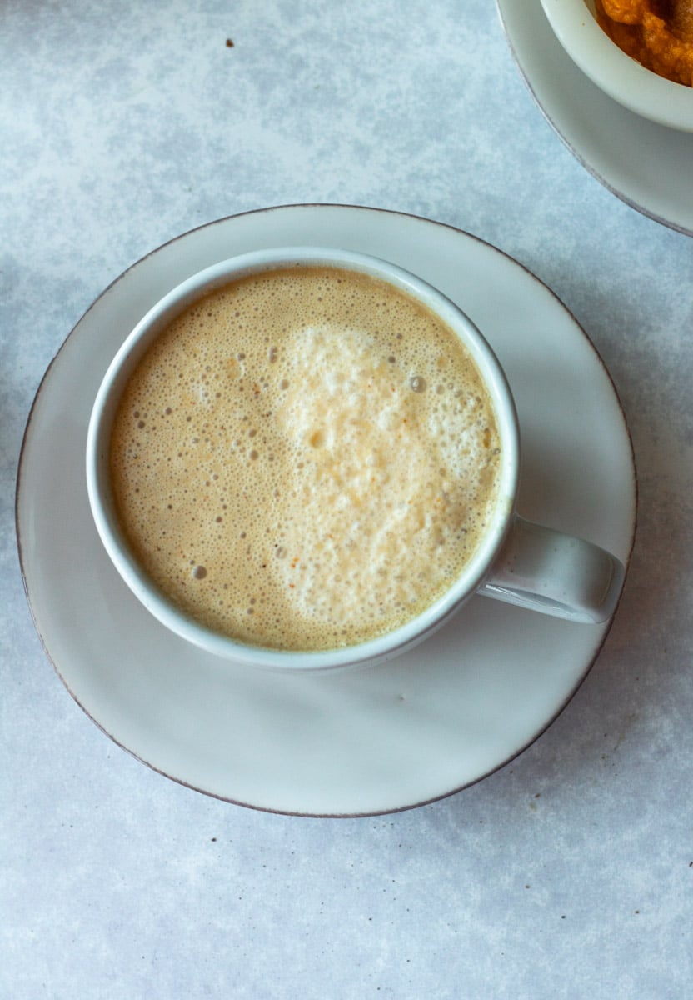

Gan Fall's Pumpkin Juice

Gan Fall's Pumpkin Juice
Pumpkin au lait, full of milk
Savor the cozy goodness of a Pumpkin au Lait, a delightful concoction that marries the natural sweetness of pumpkin with the creamy richness of milk. Whether enjoyed hot or cold,
this beverage or dessert is a harmonious blend of flavors that promises a comforting and indulgent experience. Perfect for those seeking a creamy treat to satisfy their sweet tooth on any occasion.
Makes 4-5 cups
Ingredients
- ~1/4 (300g) pumpkin
- 300mL water
- 2 tbsp honey
- 2 tbsp granulated sugar (or more as desired)
- milk (as needed)
[How to Cook]
- Remove pumpkin seeds and skin. Cut into 1 cm thick slices. Put in a small pot, add water, and simmer over medium heat. When it becomes soft, remove from heat, and cool (A).
- Add ①’s ingredients to a mixer. Add honey, and sugar, mix. Then chill in refrigerator.
- Pour ②’s ingredients into a glass. Add milk as desired. Drink while mixing.